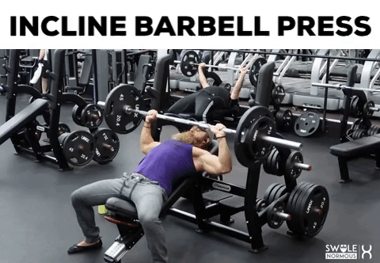

Load the bar to an appropriate weight for your training.
Lay on the bench with your feet flat on the ground, driving through to your hips. Your back should be arched, and your shoulder blades retracted.
Take a medium, pronated grip covering the rings on the bar. Remove the bar from the rack, holding the weight above your chest with your arms extended. This will be your starting position.
Lower the bar to the sternum by flexing the elbows. Maintain control and do not bounce the bar off of your chest. Your lats should stay tight and elbows slightly drawn in.
After touching your torso with the bar, extend the elbows to return the bar to the starting position.
5 sets,8-12 reps